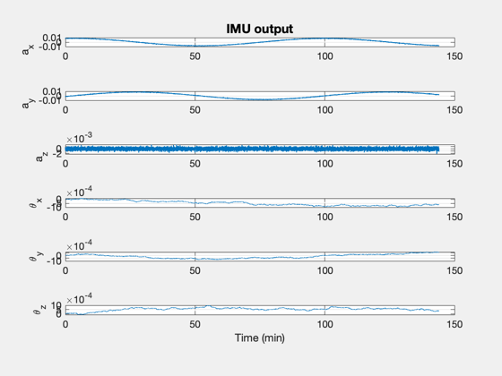

Contents
3-axis spacecraft with an IMU simulation
%-------------------------------------------------------------------------- % Copyright (c) 2016 Princeton Satellite Systems, Inc. % All rights reserved. %-------------------------------------------------------------------------- % Since 2016.1 %-------------------------------------------------------------------------- % Time nDays = 0.1; dT = 0.5; tEnd = nDays*86400; n = ceil(tEnd/dT);
Initialize
With LN-200S parameters
d = RHSSpacecraftWithIMU; d.iMU.randomWalk1Sigma = [0;0;0;0.07;0.07;0.07]; d.iMU.wideband1Sigma = [35;35;35;0;0;0]; % micro-g d.iMU.sampleFrequency = 1/dT; % Gyro properties d.iMU.rho = [0.5;0.5;0.5]; % Circular orbit r = 7000; v = sqrt(d.mu/r); omega = [0.1;0;0]; d.iMU = IMU('initialize',d.iMU);
Assemble the state vector and simulate
x = [r;0;0;0;v;0;omega;[1;0;0;0];zeros(9,1)]; xP = zeros(length(x)+6,n); for k = 1:n % Get the acceleration vector xDot = RHSSpacecraftWithIMU(x,0,d); % IMU output [accel;rate] iMUO = IMU('output',xDot,x,d.iMU); % Plotting xP(:,k) = [x;iMUO]; % State propagation x = RK4(@RHSSpacecraftWithIMU,x,dT,0,d); end
Plot
[t,tL] = TimeLabl((0:(n-1))*dT);
yL = {'a_x' 'a_y' 'a_z' '\theta_x','\theta_y','\theta_z'};
Plot2D(t,xP(23:28,:),tL,yL,'IMU output')
%--------------------------------------
% $Id: d664f219e065c2c272876b79d8baa979181f3b88 $
